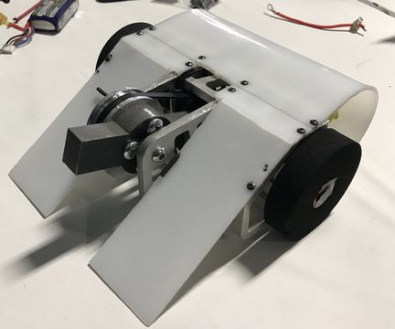
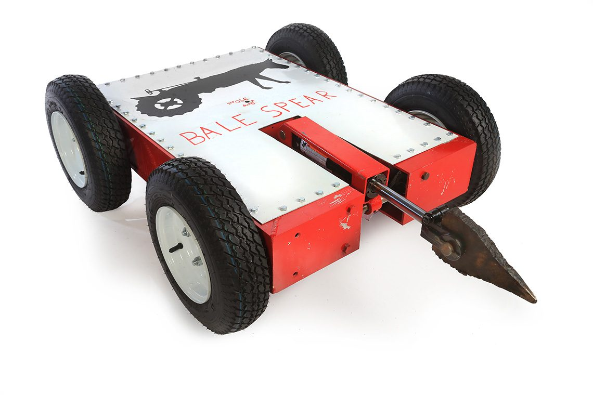
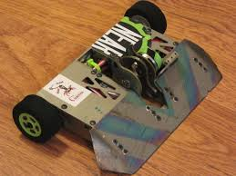

Fallen Robot
O Fallen Robot é um robô inovador,atraves do conhecimento que obtivemos no ano fomos capazes de juntar tudo e desenvolver este robo, que tem como objetivo botar em prova nossos conhecimentos e tambem criar um produto que possa competir e ser capaz de ganhar as batalhas contra outros robos.
Imagens do Robo
   GaleriaJoao Pedro Pasqualini Paulussi
Atualmente estudando Sistemas de Informacao pela FIAP. Este robo e o nosso projeto do ano, onde colocamos todos os nos conhecimentos adquiridos ao longo dod semestres
Matheus de Moura Garcia
Meu nome é Matheus Moura, tenho 18 anos e sou da cidade de Santo André e estou cursando Sistemas de Informação na FIAP.
Pedro Yuzo Maeda Goyos
Meu nome é Pedro, e me formei no ensino médio da FIAP School. Tenho interesse em IA e programação.
Guilherme Yuiti Matsushita Nakamura
Meu nome é guilherme nakamura tenho 20 anos moro em São Bernardo do Campo faço, Atualmente estou cursando Sistemas de Informacao pela FIAP.